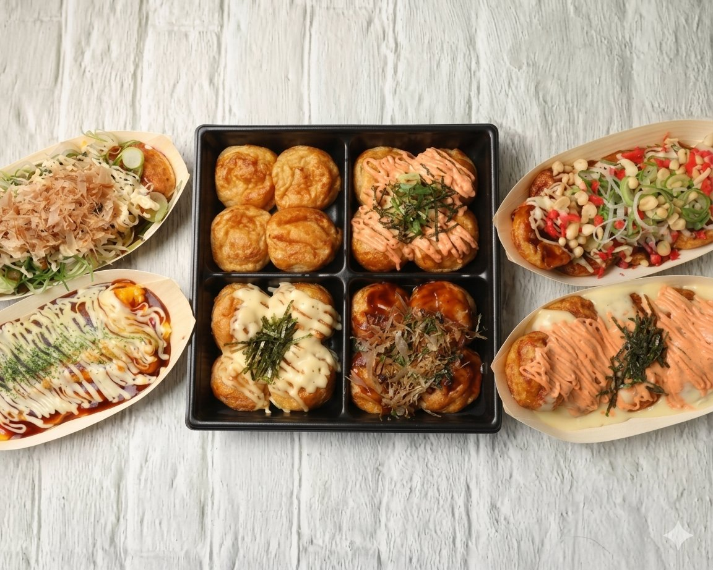

大阪ふわとろたこ焼き × はげたこ野田店
大阪の「ふわとろ」を、
野田で。
本場大阪のふわふわでとろけるような味わいが評判の、たこ焼き専門店「はげたこ」(茨城県守谷市)。当店は、この美味しさをより多くのお客様にお届けしたいという想いから、2025年6月に「はげたこ野田店」をオープンいたしました。
関東で主流の「揚げ焼き」とは一線を画す、大阪伝統のふわとろスタイル。出汁の効いた生地をじっくり焼き上げ、外はふんわり、中はとろとろに仕上げています。
何もかけなくても美味しい、当店自慢の「理想のたこ焼き」。口に入れた瞬間にお出汁の旨味が広がり、ソースなしでも感動の美味しさです。
もちろん、ソースをはじめとする様々なトッピングとの相性も抜群。味付けによってガラリと表情を変え、それぞれの美味しさを楽しめます。
そのメニューの数は、なんと30種類以上!
どれにしようか迷ったときは、2つの味を楽しめる「ハーフ&ハーフ」や、4種類を詰め合わせた「家飲みセット」など、トッピングが選べる人気メニューがおすすめです。